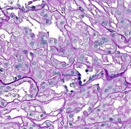
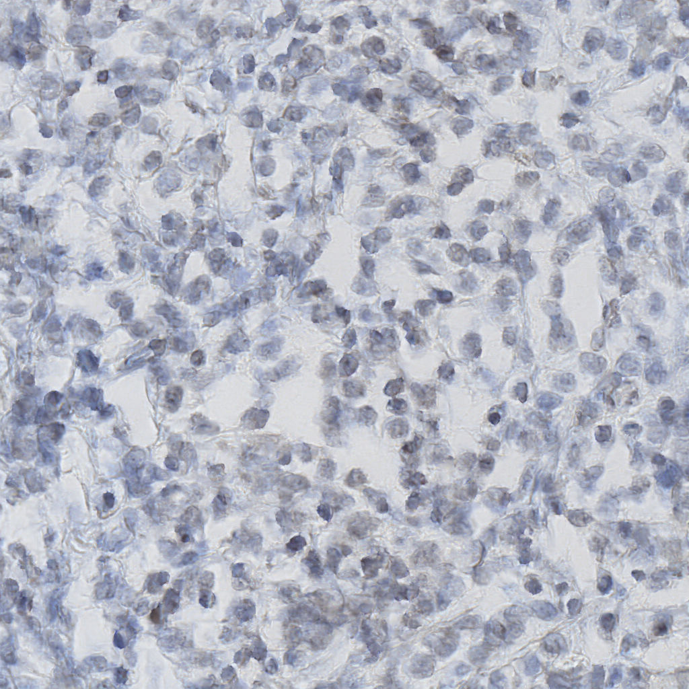
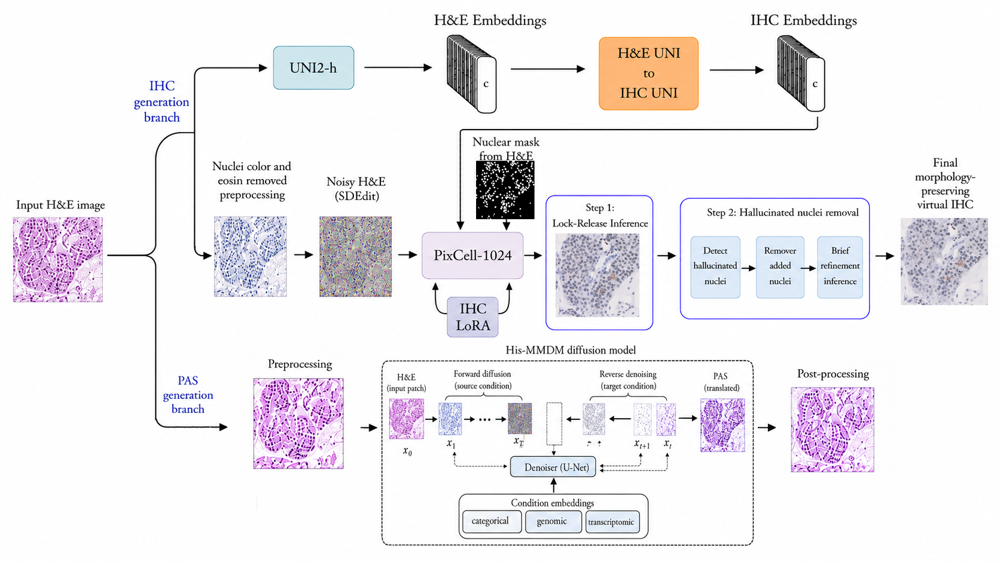

INTERACTIVE PAPER EXPERIENCE · COMPAYL WORKSHOP AT MICCAI 2026
Morphology-Preserving
Virtual Staining
From H&E to PAS and IHC using Enhanced Diffusion Models
Representative results
Two virtual staining branches
Representative results generated independently by the H&E-to-PAS and H&E-to-IHC branches.

Virtual PAS
Virtual IHCThe research
Preserving morphology
Transforming stains
We introduce a morphology-preserving virtual staining framework for unpaired H&E-to-PAS and H&E-to-IHC translation. Luminance-guided post-processing recovers fine structural boundaries in PAS, while a two-step inference pipeline protects spatial fidelity in IHC.
Université Côte d’Azur, INRIA, CNRS · CHU Nice
Blind test · PAS
Real or generated?
Classify each Periodic Acid–Schiff image before revealing your score.
Blind test · IHC
Real or generated?
Classify each immunohistochemistry image before revealing your score.